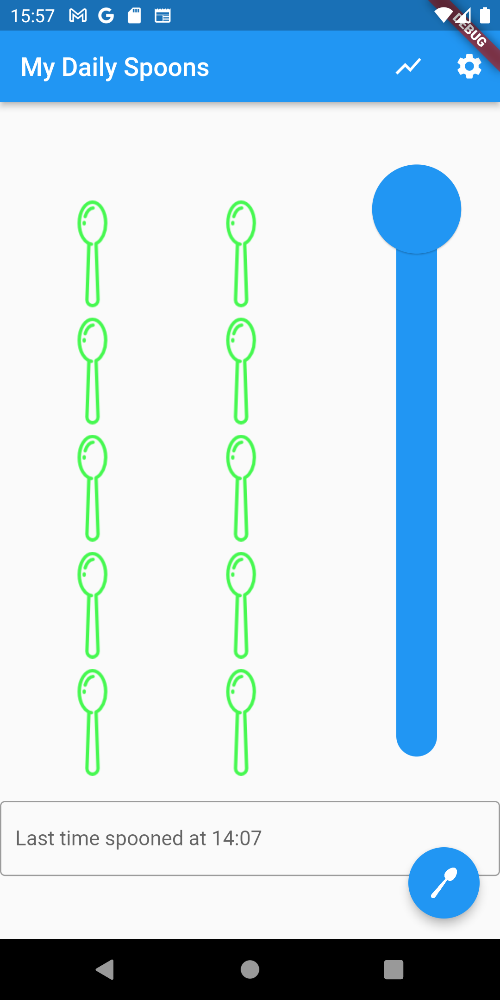
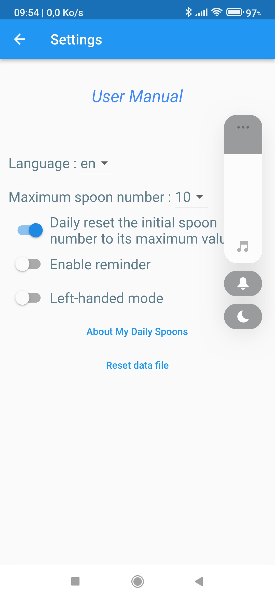
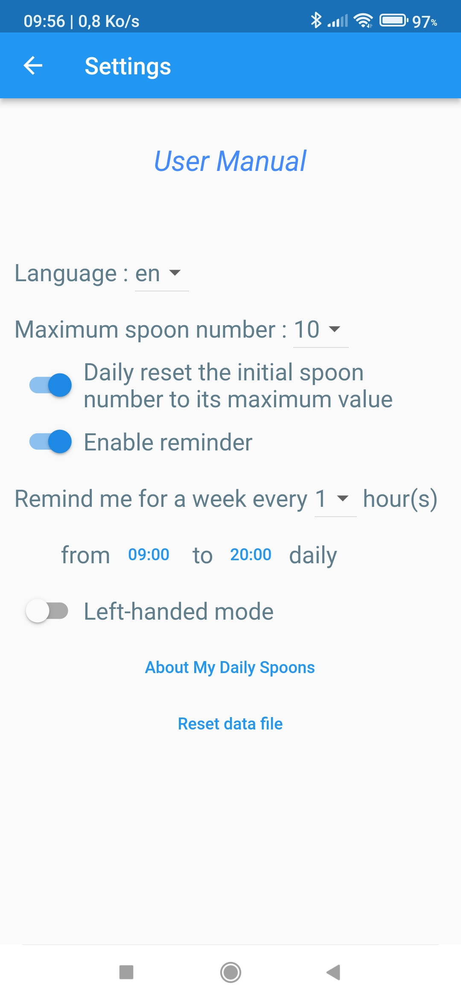
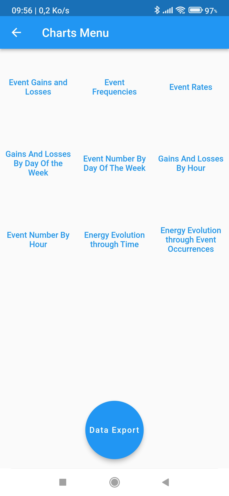
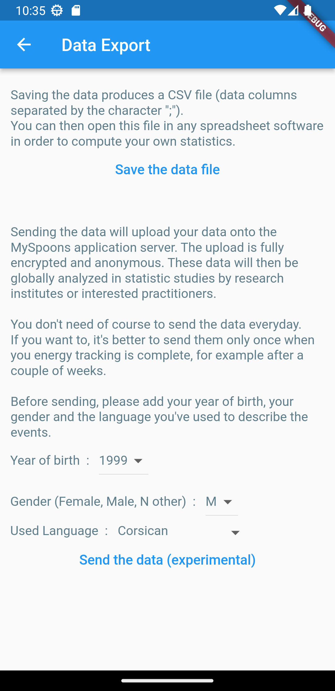

User Manual
My Daily Spoons is a small application to log in some felt energy level along the day.It also allows to record aside the enerly level some short text to depict the cause or the event related to this level.
It's so easy to use that everything can be done with only one thumb :
- you set your current energy level, expressed in spoon number,
- you possibly record some words related to this level (optional),
- you eventually log in the measurement
...then later, as you want, you do it again.

To set the energy level or the spoon number, just slide vertically the cursor (the big blue circle) up or down to the wanted position.
To link an event description to this spoon number, just tap once on the text field located beneath the spoons (the rectangle written with "Last time spooned at 14:07" on the left picture). Then enter your text.
At last, to record this event and this spoon number, tap once on the button "Spoon", the circular blue button containing a white spoon in the right bottom.
To link an event description to this spoon number, just tap once on the text field located beneath the spoons (the rectangle written with "Last time spooned at 14:07" on the left picture). Then enter your text.
At last, to record this event and this spoon number, tap once on the button "Spoon", the circular blue button containing a white spoon in the right bottom.
The order doesn't matter : you can enter the text first, then move the cursor, or do the opposite.
You can modify the values as much as you want, nothing is recorded until you tap the "Spoon" blue button.
When tapping the "Spoon" button, the spoon number, the current energy level, all the words in the text field and also the time, the date and the day of the week are recorded.
You can modify the values as much as you want, nothing is recorded until you tap the "Spoon" blue button.
When tapping the "Spoon" button, the spoon number, the current energy level, all the words in the text field and also the time, the date and the day of the week are recorded.

Tip
When tapping once on the text field, a keyboard slides up on the screen.
Instead of writing with the keyboard keys, you can tap once on the microphon icon located under the "Spoon" button. You can then orally dictate the words you want to relate to the current spoon number.
When tapping once on the text field, a keyboard slides up on the screen.
Instead of writing with the keyboard keys, you can tap once on the microphon icon located under the "Spoon" button. You can then orally dictate the words you want to relate to the current spoon number.
If you like this application, feel free to support it so it can be maintained and improved.
Note 1 : Pressing the keyboard validation key ✓ only enters the text, but records nothing. Pressing the "Spoon" blue button is still required to record a text and a spoob number.
Note 2 : Only 4-characters long words (or longer ones are computed in the log statistical analysis and in the chart display.
This analysis keeps more relevant when always using the same words to mean the same events.
Example : "hunger", "noise", "crowded", "meeting" rather than "I'm hungry", "I want to eat some snack", "too much people around", "too loud here", and so on.
This analysis keeps more relevant when always using the same words to mean the same events.
Example : "hunger", "noise", "crowded", "meeting" rather than "I'm hungry", "I want to eat some snack", "too much people around", "too loud here", and so on.
Note 3 : If you log your energy level on a regular basis (for instance, every hour) or every time you feel it's just changed, then the application can spot its variation, gain or loss, from an event to the next one.
The gain or loss notion is no longer relevant if you just record only some levels sometimes, but neither regularly nor on each change. Then the charts about gains and losses won't be relevant either.
In this case, only the energy levels, not the level energy variations (gain/loss), will be meaningful.
The gain or loss notion is no longer relevant if you just record only some levels sometimes, but neither regularly nor on each change. Then the charts about gains and losses won't be relevant either.
In this case, only the energy levels, not the level energy variations (gain/loss), will be meaningful.
Settings
Tap the iconYou then get this page :

- User Manual : links to this documentation page
- Language : choose the application interface language from english (en) or french (fr)
- Maximum spoon number : choose the maximum spoon number when the main screen slider is in the upper position. All the energy rate computations taken then in account this current value.
- Daily reset the initial spoon number to its maximum value : by default, the slider cursor keeps the last registered position. This option sets back the cursor to its upper position daily every first application start.
- Enable Reminder : enables or disables the notification system (see below for details)
- Left-handed mode : toggles the main screen slider and Spoon button to the left side
- About My Daily Spoons : displays information about the application version
- Reset data file : deletes all the recorded data until now
Reminder use :

When the reminder is enabled, its frequency and time-slot must be set, for example, every 2 hours each day.
The notifier then starts for a week.
Every parameter change (frequency, time-slot, disabling/re-enabling) restarts the notifier for a week from the time of this change.
Notifications are then sent in the chosen time-slot and frequency even when the application is not running.
Just disable the reminder to stop the notification sending.
The notifier then starts for a week.
Every parameter change (frequency, time-slot, disabling/re-enabling) restarts the notifier for a week from the time of this change.
Notifications are then sent in the chosen time-slot and frequency even when the application is not running.
Just disable the reminder to stop the notification sending.
Charts and Data
Tap the iconSo as charts can be plotted (or so as data can be exported), data must first be recorded, otherwise the following menus will show nothing at all.
Notice : energy gains and losses are relevant only if you record your energy level either regularly or when you feel it has just changed.

- Event Gains and Losses : intensity and frequency mix of energy variation by event type.
- Event Frequencies : average frequencies by event type, regardless of the intensity.
- Event Rates : average intensities by event type, regardless of the frequency.
- Gains And Losses By Day Of The Week :gain and loss intensity cumulations by day of the week.
- Event Number By Day Of The Week : event type number cumulations by day if the week.
- Gains And Losses By Hour : gain and losses intensity cumulations by hours, regardless of the day.
- Event Number By Hour : event type number cumulations by hours, regardless of the day.
- Energy Evolution Through Time : global energy variation curve through time.
- Energy Evolution Through Event Occurencies : global energy variation curve, regardless of the time, according to the successive events.
- Data Export button : shows the data export screen.
Data Export
You get to the Data Export screen from the Charts screen.So as data can be exported, data must be recorded first, otherwise the data export process will product nothing.

- Save the data file : produces a comma-separated-values (CSV) file, the data separator being here the character ";".
The recorded data are :- Timestamp : the date and the time when the data is recorded.
- WeekDay : the number of the week of the day. mon = 1, tue = 2, etc.
- EnergyRate : the energy rate from 0 to 100.
- SpoonNb : the related current spoon number.
- maxSpoonNb : the related current maximum spoon number.
- Comment : the text describing the event.
You can then, for instance, send this file with an e-mail to a computer where you can open it in a spreadsheet software like Excel.
You can also just "drap and drop" this file on the MySpoons Charts site in order to display the charts in your browser. - Send the data : Internet connection required. it sends securely and anonymously the data to the MySpoon application server.
Practionners or researcher can then use them for statistic studies.
It's better to send the data only once when your energy tracking is over, after many days or weeks of recording.
Before sending, please set your year of birth, your gender and the language you used to describe the events, so it il will ease the statistic processing.